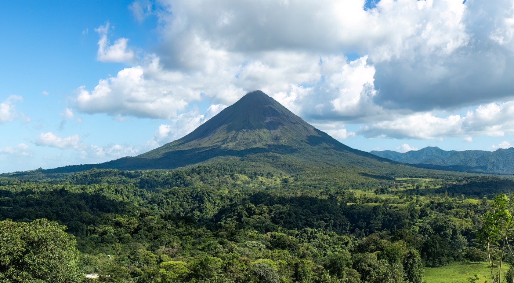
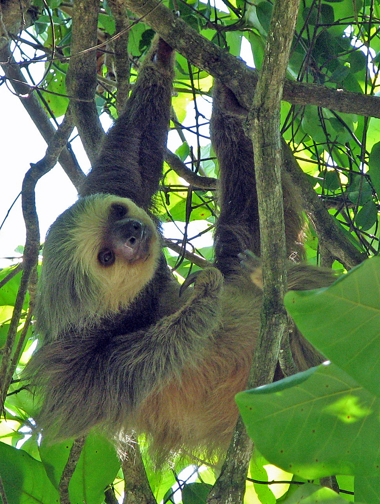
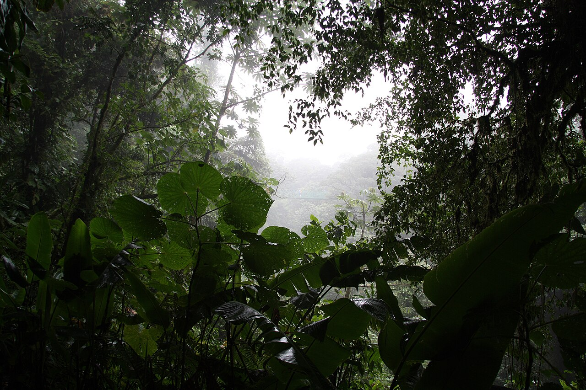

Sáb 20 → Dom 28 de marzo, 2027 · 9 días corridos (1 ida + 7 destino + 1 vuelta) · con 2 días de licencia ya pedidos (lun 22 + mar 23)
proyectos de viaje. Ese comparador sigue vivo para otros destinos y otros viajes futuros — este proyecto es solo Costa Rica, de acá en más. Falta cerrar cuál de las 5 variantes/zonas de abajo (o combinación) arma el itinerario final.



Mapa · Loop Itinerario A (My Maps)
Recorrido concreto armado por Daniel mirando el mapa en vivo (12/9/2026), combinando piezas de las variantes 1, 4 y 5 en un solo loop por el oeste del país — entra y sale por San José, sube primero al norte y baja después por la costa Pacífico central. Descarta a propósito el Caribe (Tortuguero) y el extremo sur (Corcovado/Bahía Drake). Mapa en vivo arriba, con las 8 paradas marcadas.
Orden corregido (12/9/2026): Hacienda Alsacia va antes de Poás, no después de La Paz como se había puesto en un primer momento — está en la misma ladera del volcán, más cerca de Alajuela.
| Tramo | Tiempo |
|---|---|
| SJO → Hacienda Alsacia | ~45 min |
| Alsacia → Volcán Poás | ~15-20 min |
| Poás → La Paz Waterfall Gardens | ~20-30 min |
| La Paz → La Fortuna | ~2h |
| La Fortuna → Monteverde | ~2h30-3h |
| Monteverde → Puntarenas | ~1h30 |
| Puntarenas → Manuel Antonio | ~2h-2h45 |
| Manuel Antonio → SJO | ~3h-4h |
Total de manejo puro: ~11h30-13h repartidas en 8-9 días — ningún tramo individual supera las 3-4h. Tiempos sin tráfico ni paradas (WebSearch 12/9/2026).
Según SINAC, el parque abre 7:00am y cierra a las 3:00pm (no 4pm como se pensó por un video) — cerrado los martes, miércoles a lunes el resto de la semana. El sábado 27 no es martes, sin conflicto. Las entradas se compran únicamente online, no hay venta en puerta. Precio confirmado: Admisión Extranjeros, Adulto(a) No Residente: US$16,00.
🎟 Comprar entradas — serviciosenlinea.sinac.go.crFuentes: SINAC — Parque Nacional Manuel Antonio · Ficha oficial (PDF)
Franjas de entrada — captura real, fecha 27/03/2027
| Grupo | Franja de entrada | Disponibles |
|---|---|---|
| Grupo 01 ✓ | 07:00am - 07:40am | 450 |
| Grupo 02 | 08:00am - 08:40am | 450 |
| Grupo 03 | 09:00am - 09:40am | 450 |
| Grupo 04 | 10:00am - 10:40am | 450 |
| Grupo 05 | 11:00am - 11:40am | 400 |
| Grupo 06 | 12:00pm - 12:40pm | 200 |
| Grupo 07 | 01:00pm - 02:30pm | 101 |
Recomendación: reservar el Grupo 01 (07:00-07:40am). Entrando con la primera franja se aprovecha el día completo hasta la hora límite (3pm) — el máximo posible. La fauna suele estar más activa antes del calor del mediodía, hay menos gente, y se evitan mejor las lluvias de tarde típicas de la costa Pacífica en esta época. Las franjas tardías (Grupo 06 y 07) además tienen mucha menos disponibilidad — otra razón para reservar temprano.
Daniel se registró en serviciosenlinea.sinac.go.cr y confirmó que Volcán Poás también es de pago — Admisión Extranjeros, Adulto(a) No Residente: US$15,00. Todavía no se puede reservar esa fecha (marzo 2027) — el sistema devuelve "período no disponible", esperable a ~6 meses de anticipación. Pendiente: volver a entrar más cerca de la fecha del viaje para reservar Poás y confirmar el resto de las entradas. Los sitios privados del itinerario (La Paz Waterfall Gardens, Selvatura, Catarata La Fortuna, Hacienda Alsacia) NO pasan por SINAC — venta aparte, por su cuenta.
Un punto sin resolver: el tramo del golfo de Nicoya es el menos resuelto — si es solo costa, el día 6-7 es liviano; si se suma Isla Venado en sí (auto a Lepanto + ferry + bote), esa parada necesita 2-3 noches propias y no entra sin sacar días de otro lado. Sin datos de tiempo/precio del cruce todavía.
Surgió al evaluar una extensión hacia Tamarindo (12/9/2026): en vez de armar un Itinerario B alternativo, se decidió dejar A como está y documentar todo lo que NO cubre, ordenado por cuán fácil sería sumarlo sin romper los 9 días. Combina research ya documentado + búsquedas nuevas (12/9/2026).
Sobre la Costanera Sur, el mismo camino que A ya recorre entre el golfo y Manuel Antonio (~1h30 desde Quepos). Mayor concentración de cocodrilos de Centroamérica y santuario de la lapa roja. Parada de camino, no desvío.
También sobre la Costanera Sur, mismo tramo que Carara — de Jacó a Quepos, menos de 2h. La más desarrollada de la zona (surf, vida nocturna); Hermosa tiene de las mejores olas del país. Encaja como almuerzo o noche extra en el día 7.
~1h20-1h30 desde La Fortuna, ruta pavimentada. Catarata y río turquesa, caminata de 6km/~3h. Encaja como excursión de día en el día 2 o 3 del esqueleto, sin sumar noches.
Cerca de Poasito/Volcán Poás. Se combina con la ruta del día 1 (San José → Poás → La Fortuna) desviando por San Miguel — mismo día, más horas de ruta de montaña pero sin sumar noche. Blue Falls + Catarata del Toro, poca gente.
3-5h en auto desde Monteverde (Santa Elena → Juntas → Interamericana → puente Nicoya → Santa Cruz → Tamarindo). Necesita mínimo 1 noche — no es desvío de un día. Mejor una sola parada que bordear toda la costa.
Ferry Puntarenas-Paquera, 70 min (~US$24 el auto) + 60 min en auto a Montezuma. Entre ferry, espera y traslado es casi un día completo de tránsito — necesita 1-2 noches para que valga la pena.
Se llega con el mismo auto hasta Sierpe (~7h/370km, ruta pavimentada) y de ahí lancha ~50-60min hasta Drake Bay (auto queda estacionado). Puerto Jiménez, alternativa, tiene ruta 100% pavimentada de punta a punta. El vuelo interno existe pero es opcional, no obligatorio. Difícil por las 7h+ de auto fuera de cualquier tramo de A y por quedar en el extremo sur, lejos del loop.
Se llega con el mismo auto hasta La Pavona (~3-4h, último tramo de tierra, 4x4 recomendable), se deja estacionado y de ahí lancha pública 45min-2h. No hace falta vuelo. Difícil por ser un desvío completo hacia el Caribe, lado opuesto del país respecto a todo el recorrido de A, sumando un día entero de tránsito solo de ida.
Caminos lentos/de tierra en tramos (sobre todo Nosara-Sámara). Recorrerla en serio pide días propios, y choca con la preferencia ya documentada de evitar viajes de "solo playa".
Queda al sureste de San José, del lado opuesto de todo el loop de A (puramente oeste) — sumarla exige volver a cruzar el Valle Central.
Capturas reales de Turismocity (12/9/2026). 1 pasajero, económica, USD. Costa Rica está 3h detrás de Argentina — por eso las vueltas que salen después del mediodía costarricense llegan recién al día siguiente en Argentina.
| Aerolínea | Sale EZE | Llega SJO | Duración |
|---|---|---|---|
| Avianca | 01:40 | 08:50 | 10h10min |
| Copa Airlines | 00:52 | 08:16 | 10h24min |
| Copa Airlines | 02:08 | 10:00 | 10h52min |
| Copa Airlines | 00:52 | 10:00 | 12h08min |
Casi todas salen de madrugada de EZE (00:52-02:08) y llegan a SJO a media mañana — el patrón dominante en esta ruta. Encaja con el horario de Daniel/Melisa (salen del trabajo el viernes 19 a las 17h, viajan esa noche).
Detalle tramo por tramo — las 2 mejores opciones de ida
| Avianca (AV218 + AV696) — vía Bogotá | |||
|---|---|---|---|
| EZE → BOG | Ministro Pistarini 01:40 (sáb 20/3) | El Dorado Intl. 06:15 | 6h35min |
| Escala Bogotá | — | 1h10min | |
| BOG → SJO | El Dorado Intl. 07:25 | Juan Santamaría 08:50 | 2h25min |
| Copa Airlines (CM168 + CM787) — vía Ciudad de Panamá | |||
| EZE → PTY | Ministro Pistarini 00:52 (sáb 20/3) | Tocumen Intl. 06:09 | 7h17min |
| Escala Panamá | — | 1h47min | |
| PTY → SJO | Tocumen Intl. 07:56 | Juan Santamaría 08:16 | 1h20min |
Confirmado: la escala de Avianca en Bogotá (1h10min) es más corta que la de Copa en Panamá (1h47min). Avianca vuela más en el aire (9h) pero espera menos; Copa vuela menos (8h37) pero espera más. Resultado neto parecido — ventaja mínima de Avianca en duración total, de Copa en hora de llegada.
| Aerolínea | Sale SJO | Llega EZE | Duración | Llega... |
|---|---|---|---|---|
| Avianca | 01:50 | 15:40 | 10h50min | mismo día |
| Copa Airlines | 08:25 | 21:38 | 10h13min | mismo día |
| Copa Airlines | 08:25 | 23:23 | 11h58min | mismo día (tarde) |
| Avianca | 17:15 | 06:05 (+1) | 9h50min | día siguiente |
| LATAM | 13:40 | 03:00 (+1) | 10h20min | día siguiente |
| Avianca | 09:30 | 00:30 (+1) | 12h00min | día sig. (medianoche) |
| Copa Airlines | 08:25 | 00:28 (+1) | 13h03min | día siguiente |
| Copa Airlines | 19:15 | 07:40 (+1) | 9h25min | día siguiente |
Daniel y Melisa trabajan el lunes 29/3 a la mañana — un regreso que llega "día siguiente" en Argentina significa aterrizar de madrugada, sin margen de descanso antes de ir a trabajar.
| Ida | Vuelta | Aerolínea | Precio | Nota |
|---|---|---|---|---|
| Avianca 01:40→08:50 | Avianca 01:50→15:40 | Avianca | US$680 | 🟢 Mejor margen — llega domingo 15:40 |
| Avianca 01:40→08:50 | Avianca 09:30→00:30+1 | Avianca | US$680 | Mismo precio que la de arriba, llega peor |
| Avianca 01:40→08:50 | Avianca 17:15→06:05+1 | Avianca | US$731 | Llega lunes 06:05, casi sin margen |
| Avianca 01:40→08:50 | LATAM 13:40→03:00+1 | Avianca+LATAM | US$818 | Llega lunes 03:00 |
| Copa 00:52→08:16 | Copa 08:25→23:23 | Copa | US$861 | 🟡 Mismo día, pero tarde |
| Copa 02:08→10:00 | Copa 08:25→23:23 | Copa | US$861 | Igual que la de arriba, ida más tarde |
| Copa 00:52→08:16 | Copa 08:25→00:28+1 | Copa | US$861 | 🔴 Evitar — mismo precio, llega peor |
| Copa 02:08→10:00 | Copa 08:25→00:28+1 | Copa | US$861 | 🔴 Evitar, mismo motivo |
| Copa 00:52→08:16 | Copa 08:25→21:38 | Copa | US$953 | 🟡 Mismo día, más temprano que las de 861 |
| Copa 00:52→08:16 | Copa 19:15→07:40+1 | Copa | US$953 | Quedan 2 asientos, llega lunes 07:40 |
Lectura rápida: para maximizar el margen de descanso antes del lunes 29, la opción de US$680 (Avianca ambos tramos, fila 1) es la más barata Y la que mejor llega — no hace falta pagar de más. Si se prefiere no salir de Costa Rica de madrugada, US$953 con vuelta 08:25→21:38 es la alternativa que mejor concilia ambas cosas, a mayor precio.
| Avianca (AV691 + AV8395) — vía Bogotá — vuelta 28/03 ✓ elegida | |||
|---|---|---|---|
| SJO → BOG | Juan Santamaría 01:40 (dom 28/3) | El Dorado Intl. 04:50 | 2h10min |
| Escala Bogotá | — | 2h25min | |
| BOG → EZE | El Dorado Intl. 07:15 | Ministro Pistarini 15:40 (dom 28/3) | 6h25min |
Duración total: 11h00min. Llega a EZE 15:40 el domingo 28/3 — mismo horario que la búsqueda de prueba, solo cambia el número del primer vuelo (AV691 en vez de AV693). Precio todavía sin confirmar en esta captura puntual, pendiente de cotizar antes de reservar.
Búsqueda de prueba (fecha 27/03) — Avianca vs. Copa, referencia histórica
| Avianca (AV693 + AV8395) — vía Bogotá — US$680 | |||
|---|---|---|---|
| SJO → BOG | Juan Santamaría 01:50 | El Dorado Intl. 05:05 | 2h15min |
| Escala Bogotá | — | 2h05min | |
| BOG → EZE | El Dorado Intl. 07:10 | Ministro Pistarini 15:40 | 6h30min |
| Copa Airlines (CM392 + CM167) — vía Ciudad de Panamá — US$861 | |||
| SJO → PTY | Juan Santamaría 08:25 | Tocumen Intl. 10:50 | 1h25min |
| Escala Panamá | — | 3h22min | |
| PTY → EZE | Tocumen Intl. 14:12 | Ministro Pistarini 23:23 | 7h11min |
Alternativas de salida sábado 27 — evaluadas y descartadas
| Aerolínea | Sale SJO (sáb 27) | Llega EZE | Duración | Escala |
|---|---|---|---|---|
| Avianca (AV699+AV87) | 17:15 | 06:05 (dom) | 9h50min | Bogotá, 1h05min |
| Copa (CM839+CM367) | 19:15 | 07:40 (dom) | 9h25min | Panamá, 45min |
| Copa (CM115+CM367) | 17:20 | 07:40 (dom) | 11h20min | Panamá, 2h39min |
| LATAM (LA2409+LA2465) | 16:55 | 07:40 (dom, a AEP) | 11h45min | Lima, 3h40min |
Las dos últimas (gris) quedan descartadas sin ventaja sobre las otras dos. Entre Avianca y Copa, la Copa 19:15→07:40 es mejor: sale 2h más tarde de SJO a cambio de llegar solo 1h35 después.
Por qué ninguna de las dos le gana a la AV691, con la regla de no manejar de noche: cualquier vuelo que salga sábado a la tarde/noche exige completar el traslado Manuel Antonio→SJO a tiempo para un check-in puntual ese mismo día — un horario límite fijo, sin margen, en un día ya ajustado. La AV691 sale recién a la 01:40 del domingo: el traslado se hace en cualquier momento de luz del sábado, sin apuro, con horas de sobra esperando después cerca del aeropuerto. Ninguna alternativa de salida sábado ofrece ese colchón.
✅ Conclusión final (12/9/2026): Avianca vía Bogotá queda elegida para la vuelta — AV691+AV8395, US$680 (ver cuadro verde al principio de la sección). Llegar 15:40 permite estar en casa ~17h del domingo, con margen antes del lunes 29, y al no depender de un horario límite el sábado, es también la opción más segura frente a la regla de no manejar de noche.
Documentadas primero, elegidas después — a propósito. Ninguna está descartada todavía; la 1 es la más desarrollada (itinerario real de referencia), pero la 3 y la 5 vienen ganando peso con research reciente.
Mejor repartir Monteverde 2 noches → La Fortuna 3 noches → Manuel Antonio 2 noches en vez de copiar el ritmo exacto del video. Posible excursión de día desde La Fortuna: Río Celeste (PN Volcán Tenorio, catarata y río turquesa). El Quetzal también se ve acá, no hace falta ir hasta Zona de los Santos solo por esa ave.
Si se vuela desde el exterior, conviene llegar un día antes a San José y volar a Drake al día siguiente. Sin precio propio todavía — pendiente cotizar. El vuelo interno es lo que usa este paquete puntual, no la única forma de llegar: también se puede en auto hasta Sierpe (~7h) + lancha (~1h), o hasta Puerto Jiménez por ruta 100% pavimentada — ver sección "Qué le falta a Itinerario A" más abajo.
⚠️ Pendiente crítico: verificar si la temporada de lluvias del Caribe es realmente inversa al resto del país (aprendizaje de otra fuente) — condiciona directamente esta variante y cualquier paso por Cahuita/Puerto Viejo/Talamanca en marzo.
No es itinerario completo de 7-8 días — podría sumarse como tramo inicial/final de otra variante (cerca de Monteverde/Nicoya) o quedar aparte. Sin precio todavía; pendiente ubicarla en el mapa respecto a las otras zonas.
Bajos del Toro (Blue Falls + catarata Toro, poca gente) podría sumarse como parada intermedia, cerca de Poás. Recomendación que originó esta variante: "en la Zona de los Santos se hace avistamiento de aves, en especial el Quetzal — aunque también se puede ver en Monteverde".
Simulación real (sin comprar) con las fechas y horarios exactos del viaje: retiro 20/3 10am, devolución 27/3 10pm, 7 días.
| Categoría | Tarifa base | + Protección a terceros | Total |
|---|---|---|---|
| Kia Picanto AT (4X2) | US$490,16 | US$108,48 | US$598,64 |
| Suzuki Vitara 4WD AT (4x4) | US$697,92 | US$108,48 | US$806,40 |
Diferencia real 4x4 vs. no: ~US$208 por los 7 días (~US$30/día). La protección a terceros es fija en ambos — es el seguro obligatorio por ley, no algo que evite la tarjeta de crédito.
Fuentes: Budget.co.cr · Tripadvisor · Paradise Catchers · MyTanFeet · Jumbo Car
⚠️ Nota para no repetir el error: no dar por sentado que hace falta pagar el extra de un 4x4 pleno como si fuera obligatorio — un 2WD de buena altura es una opción real y validada, más barata. Queda pendiente decidir, no cerrado.
Misma plataforma que se usó para Yellowstone/Jackson. Mismas fechas/horarios (20/3 10am - 27/3 10pm), filtro Automática, 225 de 314 vehículos.
Ejemplos puntuales (8 días — el sitio cuenta un día más que Adobe por la devolución a las 22h): Nissan Versa (midsize, Avis) US$267,42 · Geely GX3 (pequeño, Sixt) US$307,57 · Nissan Kicks (SUV, Avis) US$317-338 · Toyota Raize (SUV) US$802,45 — este sí ronda el precio del 4x4 real de Adobe, confirmar su tracción antes de asumirlo equivalente.
Todas las empresas disponibles, de menor a mayor precio:
Avis US$268 · Sixt US$308 · Secret Deal US$386 · Costa Rent US$460 · Amigo Rent A Car US$474 · Flexways US$428 · Green Motion US$504 · U-save US$514 · Jumbocar US$515 · Ace Rent A Car US$658 · Budget US$752 · Dollar US$822 · Thrifty US$822 · Autounion US$886 · Easycar US$865 · National US$873 · Hertz US$1.041 · Alamo US$1.115
Rango enorme (US$268 a US$1.115) para categorías similares — en Costa Rica conviene comparar mucho más que en otros países. Pendiente: rebuscar filtrando específicamente por 4x4/doble tracción, no solo "SUV", para comparar de verdad contra los US$806,40 de Adobe.
Además de Adobe (ya cotizado), conviene comparar contra empresas costarricenses más chicas — mismo criterio que se usó para Salta en el otro proyecto. Ninguna publica precio fijo cerrado online, hay que cotizar por WhatsApp.
| Empresa | WhatsApp/Tel | Ubicación | Nota |
|---|---|---|---|
| Pilot Car Rental | +506 8513-1104 | La Garita, Alajuela (cerca SJO) | Ejemplo: US$216/3,5 días. Reserva por WhatsApp con foto de pasaporte. |
| Wild Rider | +506 8973-2759 | San José, retiro en SJO | 4x4 y camper/motorhome, perfil aventura. |
| FACTO Rent a Car | 8367-0937 | Costa Rica | Reserva directo por WhatsApp. |
| 4x4 Rental Costa Rica | WhatsApp desde la web | +15 oficinas, retiro gratis en SJO | Desde ~US$35/día all-inclusive (otra fuente: US$12-25 según vehículo, verificar). |
| FAST Rent A Car | WhatsApp desde la web | Alajuela, cerca SJO | Empresa familiar desde 2008, sin cargo por conductor adicional. |
Pendiente: escribir por WhatsApp a Pilot, Wild Rider y FACTO (número ya confirmado) pidiendo cotización — ahora que la necesidad de 4x4 quedó en duda, cotizar tanto 4x4 como 2WD de buena altura, y comparar contra Adobe (US$806,40 el 4x4, US$598,64 el 2WD) y EconomyBookings.
Criterio de Daniel: no pasan mucho tiempo en el hospedaje, no buscan lujo — piden baño privado, agua caliente, ropa de cama y toallas, A/C y cama cómoda.
La Fortuna (3 noches, 20-23/3) — 3 referencias, no decisión cerrada
Monteverde (2 noches, 23-25/3) — 2 referencias, no decisión cerrada
Puntarenas (1 noche, 25-26/3) — 2 referencias, no decisión cerrada
Manuel Antonio / Quepos (1 noche, 26-27/3) — 2 referencias, no decisión cerrada
viajes/proyectos de viaje/). Detalle completo de fuentes, videos citados y research crudo en investigacion.md, en esta misma carpeta.